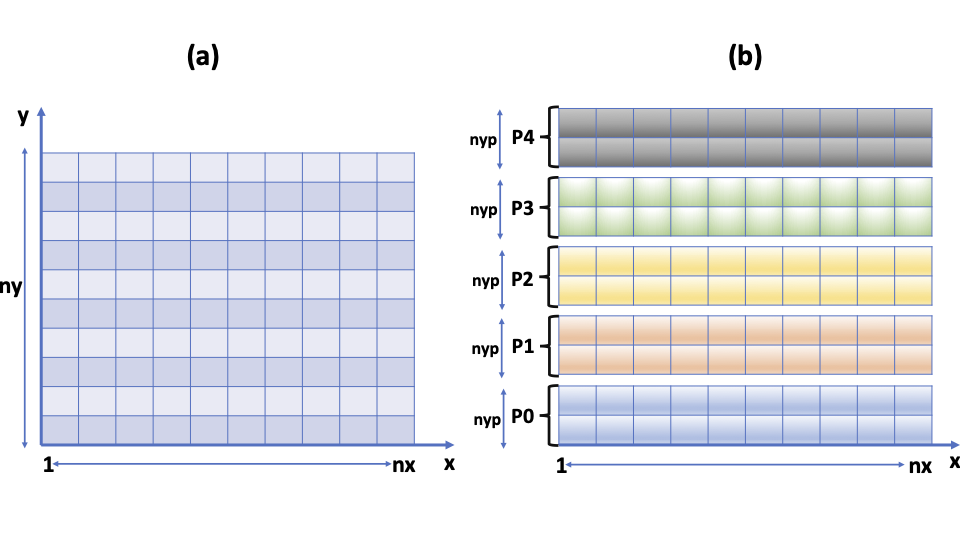
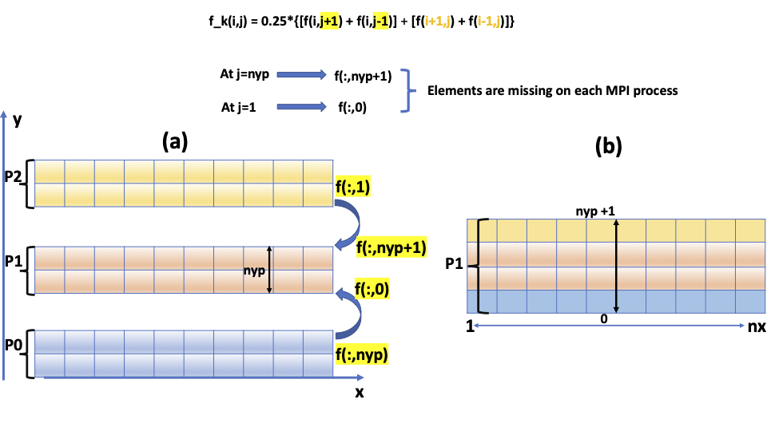
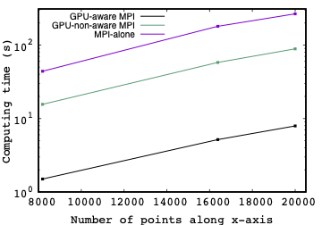

Incorporating MPI into GPU-directive models with a GPU-awareness approach
Summary
We present a descriptive implementation of a hybrid approach in which the MPI (message passing interface) communication framework is combined with either OpenACC or OpenMP application programming interfaces (APIs). The implementation is based on solving the 2D (two-dimension)-Laplace equation in a mini-application form. A special focus will be on performing point-to-point (e.g. MPI_Send and MPI_Recv) and collective (e.g. MPI_Allreduce) operations either between a pair of GPU-devices with the GPU-hardware support or by passing through a CPU-host memory. These two scenarios are referred to as GPU-aware MPI and GPU-non-aware MPI, respectively. Both scenarios will be addressed in the hybrid MPI-OpenACC and MPI-OpenMP models and their performance will be evaluated and analysed. Interesting enough, the performance is found to be increased by a factor of 10 when enabling the GPU-aware support on the
LUMI-G GPU nodes and by almost a factor of 30 compared to the case when MPI alone is considered.
By the end of this tutorial, we expect the readers to learn about
Implementing a pure MPI using a blocking mode of communication.
Implementing the hybrid MPI-OpenACC and MPI-OpenMP models, and specifically:
Defining the concept of direct memory access.
Setting up a GPU-device to be assigned to an MPI rank.
Implementing MPI operations between GPUs with and without using a CPU-host memory as a staging point.
Compiling the hybrid MPI-OpenACC and MPI-OpenMP applications on different HPC systems.
Note
The source codes discussed in this tutorial are provided at the end in the section Source codes, from which can be directly downloaded.
Introduction
Parallel computing involving communication between heterogenous systems, especially CPU (central processing unit) and GPU (graphics processing unit), permits to significantly improve the performance of computations on modern HPC (high-performance computing) systems. This in turn allows us to address large scientific computational problems, which would not be possible using conventional CPU-based approaches. Such computational problems can benefit from available GPU-programing models to further accelerate the computation over multiple GPU-devices. Here, although the asynchronous OpenACC and OpenMP offer the potential to carry out computations across multiple GPUs, the partition of the computation is limited to a single GPU node. Note that the asynchronous OpenMP relies on the compiler support. Extending the computation to explore multiple GPU nodes requires combining MPI (message passing interface) with additional GPU-programming models, such as OpenACC and OpenMP application programming interfaces (APIs) and CUDA. In this tutorial, we focus on the hybrid MPI-OpenACC and MPI-OpenMP applications.
Combining MPI with OpenACC or OpenMP offloading APIs offers the potential to fully utilizing the capacity of multiple GPUs within multiple GPU partitions in modern clusters and supercomputers. Moreover, it has the advanatge of reducing the computing time caused by transferring data via the host-memory during heterogenous communications, thus rendering the HPC applications efficient. In this contetx, it has been shown that integrating GPU-awareness into MPI library improves the performance of scientific applications. This tutorial is thus motivated by the need of guiding readers, who are familiar with MPI, in porting their MPI-based codes to heterogenous systems and towards exploring exascale platforms, such as the supercomputer LUMI.
In this tutorial, we will cover two scenarios: a scenario in which an MPI library can directly access a GPU-device memory (i.e GPU-aware MPI); and a scenario in which there is no interaction between an MPI library and a GPU-device (i.e. GPU-non-aware MPI). The implementation will be provided for both the hybrid MPI-OpenACC and MPI-OpenMP APIs.
This descriptive tutorial is organized as follows: In section I, we describe the implementation of the low-level MPI alone using an application based on solving the Laplace equation. In section II, we extend the MPI-application to incorporate a GPU-awareness approach. This is done by combining MPI with OpenACC/OpenMP AIPs. Here we will address both GPU-accelerator and non-accelerator -aware MPI library (i.e. MPI with direct memory access vs MPI without direct memory access). Section III is devoted to the performance analysis. Section IV concludes the tutorial.
Implementation of MPI alone
The MPI programming model is widely used in the scientific community for intensive parallel computing that requires distributed memory among multiple nodes. In this section, we implement the low-level MPI standard approach to parallelise our Fortran application, which is based on solving the Laplace equation in a uniform 2D-grid. Details about the numerical method can be found here.

Fig. 1. Schematic representation of an MPI-scheme, in which the data that are initially stored in an array of size (nx,ny) (Fig. 1(a)) are distributed among different MPI-processes ranging from 0 to nproc-1 (Fig. 1(b)). Here nproc is the total number of MPI-processes and npy is the size of the array on y-direction on each MPI-process (nyp=ny/nproc).
In this tutorial, we consider a simplest scenario, in which the data, which are initially of dimension \(n_{x}\) x \(n_{y}\) (cf. Fig. 1(a)) are subdivided only along the y-direction. This results into sub-arrays of dimension \(n_{x}\) x \(n_{yp}\), where \(n_{yp}\)=\(n_{y}\)/nproc. Here each sub-array is assigned to an MPI process as shown in Fig. 1(b). In a realistic problem, it is recommended to carry out a 2D domain decomposition along both x and y directions. Our simplified scenario, however has the advantage of transforming a 2D-problem into a 1D-problem in terms of implementing a parallel algorithm. Such a simplification is a key element when making tutorials.
A starting point in this implementation is to generate initial conditions (ICs) and distribute them among different processes in a communicator group. The simplest way to do so is to use the MPI_Scatter operation, which distributes the generated data from the process 0 (root) to processes labeled myid in the source code (i.e. the rank of an MPI process). This is defined in the range [myid=0, myid=nproc-1], where nproc is the total number of processes. It is worth mentioning that initiating the data in parallel among all MPI-ranks is recommended for scalability reasons. Therefore, an alternative to the MPI_Scatter operation is to use a blocking/non-blocking mode of communication as described below
if(myid.eq.0) then
allocate(f_send(nx,nyp))
do k=1,nproc-1
Call RANDOM_NUMBER(f_send(:,:))
call MPI_Send(f_send(:,:),nsend,MPI_DOUBLE_PRECISION,k,tag,&
MPI_COMM_WORLD, ierr)
enddo
deallocate(f_send)
else
call MPI_Recv(f(:,:),nsend,MPI_DOUBLE_PRECISION,0, &
tag,MPI_COMM_WORLD, status,ierr)
endif
This piece of code should be adapted to fit a specific scenario.
The ICs we consider are random and are generated by the routine RANDOM_NUMBER. Note that MPI-programs, in general, require incorporating the mpi module (i.e. use mpi) or including the header file mpif.h (i.e. include ‘mpif.h’). In our source code, the meaning of each MPI function is included briefly as a comment in the code itself.
A subsequent step is to iterate the ICs using an appropriate iterative scheme as described in our previous tutorial (see also here). In an iterative scheme, the distributed data along the y-direction needs to be updated (i.e. halo exchange); this is because the data at the boundaries of each sub-array in each MPI process are initially set to zero. For instance, computing the new array f_k(:,1) for each MPI-process requires updating the elements f(:,0) initially set for each process; similarly for f(:,nyp+1) (see the lines 82-91 in the code below and the equation in Fig. 2). A key element here is to transfer the data at the boundaries between the neighboring MPI processes at each iteration. This is schematically illustrated in Fig. 2. This is transformed into a few MPI lines using a blocking communication mode characterized by the MPI functions MPI_Send() and MPI_Recv(), as described in the source code below. The blocking mode here means that the send and receive operations do not return until the message data is available to be re-used. In other words, the operations are completed once the message is buffered. Note that there are three additional blocking modes for the send operation. These modes, however, are not addressed in the present tutorial. We thus refer readers to the MPI documentation for further description.
!transfer the data at the boundaries to the neighbouring MPI-process
!send f(:,nyp) from myid-1 to be stored in f(:,0) in myid+1
if(myid.lt.nproc-1) then
call MPI_Send(f(:,nyp),(nx+2)*1,MPI_DOUBLE_PRECISION,myid+1,tag1,&
MPI_COMM_WORLD, ierr)
endif
!receive f(:,0) from myid-1
if(myid.gt.0) then
call MPI_Recv(f(:,0),(nx+2)*1,MPI_DOUBLE_PRECISION,myid-1, &
tag1,MPI_COMM_WORLD, status,ierr)
endif
!send f(:,1) from myid+1 to be stored in f(:,nyp+1) in myid-1
if(myid.gt.0) then
call MPI_Send(f(:,1),(nx+2)*1,MPI_DOUBLE_PRECISION,myid-1,tag2,&
MPI_COMM_WORLD, ierr)
endif
!receive f(:,npy+1) from myid-1
if(myid.lt.nproc-1) then
call MPI_Recv(f(:,nyp+1),(nx+2)*1,MPI_DOUBLE_PRECISION,myid+1,&
tag2,MPI_COMM_WORLD, status,ierr)
endif
The inconvenient of the blocking mode is related to the possibility of causing the program to deadlock (i.e. the MPI message cannot be completed). An alternative to the blocking mode that avoids MPI deadlock is to use a non-blocking concept. The latter has another advanatge, which relies on enabling overlapping between communication and computation. In this type of mode, the MPI-functions MPI_Send() and MPI_Recv() are replaced with MPI_Isend() and MPI_Irecv() respectively, and should be followed by the function MPI_Wait().

Fig. 2. Schematic representation of an MPI-scheme, in which the boundary data are transferred between the neighbouring MPI-processes in a point-to-point operation before (Fig. 2(a)) and after collecting theme (Fig. 2(b)). The form of the equation is also displayed in the same figure for the sake of clarity.
Updating the data at the boundaries is a key difficulty in this example, as it requires re-collecting the data from the neighbouring MPI processes to reconstruct a new array at each iteration. The computed maximum between the new and the old arrays is done using the MPI_Allreduce operation, in which the result is returned to all MPI processes of the specified communicator group.
To check the correctness of the results, one can compute the sum of all the elements or eventually display the converged data either in 1D or 2D for comparison. For this reason, we introduce the MPI_Gather operation, which allows aggregating the data from each MPI process and make them available only in the root process. This option, however, might become time consuming and eventually might lead to segmentation error when increasing the size of the data.
Compilation process of an MPI-application
Here we describe the compilation process of a pure MPI-application on different HPC systems using the OpenMPI and Intel MPI compilers on the clusters Saga and Betzy and the Cray compiler on the supercomputer LUMI. The compiler wrappers associated with the OpenMPI, Intel MPI and Cray compilers are mpif90, mpiifort and ftn, respectively.
On the Saga and Betzy clusters
The following procedure is valid for both Saga and Betzy clusters. Here is an example of modules to be loaded.
$ module load OpenMPI/4.1.1-GCC-11.2.0
$ module load impi/2021.4.0-intel-compilers-2021.4.0
The compilation process is described according to the chosen compiler.
$ mpif90 -o laplace.mpi.ompi laplace_mpi.f90
$ mpiifort -o laplace.mpi.intel laplace_mpi.f90
Here is an example of a batch script to launch an MPI job.
#SBATCH --job-name=lap-mpi_saga
#SBATCH --account=nnxxxxx
#SBATCH --time=00:01:00
#SBATCH --qos=devel
#SBATCH --nodes=1 #Total nbr of nodes
#SBATCH --ntasks-per-node=4 #Nbr of tasks per node
#SBATCH --mem-per-cpu=2G #Host memory per CPU core
#On Betzy the mem should not be specified for a pure MPI-code
srun ./laplace.mpiompi
On the supercomputer LUMI
On the supercomputer LUMI, an MPI module is loaded in the environment cray-mpich (as described
here)
$ module load cray-mpich
The syntax of the compilation process of an MPI code using the Cray compiler can be expressed as:
$ ftn -o laplace.mpi.cray laplace_mpi.f90
To launch an MPI job, the following batch script can be used (see also here)
#!/bin/bash -l
#SBATCH --job-name=lap-mpi
#SBATCH --account=project_xxxxx
#SBATCH --time=00:02:00
#SBATCH --nodes=1
#SBATCH --ntasks=4
#SBATCH --ntasks-per-node=4
#SBATCH --partition=standard
srun ./laplace.mpi.cray
Implementation of a GPU-awareness approach
In this section we extend our MPI-application to incorporate the OpenACC and OpenMP offloading APIs targeting both NVIDIA and AMD GPU-accelerators. A special focus here is to address the concept of GPU-aware MPI library (or MPI with GPU-direct memory access) and GPU-non-aware MPI (or MPI without GPU-direct access). In the following we implement this concept for both the hybrid MPI-OpenACC and MPI-OpenMP APIs. Details about the implementation of OpenACC and OpenMP APIs alone are provided in our previous tutorial.
The GPU-awareness approach can simply mean how to make a GPU-device memory aware or not aware of the existence of an MPI-library, such that a direct or non-direct access to the library can be accomplished. Before addressing this concept, it is worthwhile (i) defining the mechanism of direct-memory access and (ii) introducing how to establish a connection between each MPI rank and a specific GPU-device. Here, we are in the situation in which a host and a device have a distinct memory (i.e. non-shared memory device).
Direct memory access
Direct memory access (DMA) (see also this Ref., which provides an overview about memory) is a mechanism by which the data can be transferred between an I/O device and a memory system without an involvement of the processor itself. It thus allows two separated processors to directly access the memory of each other via a network. This has the advantage of reducing latency and increasing throughput, which is relevant particularly for modern HPC systems. As an example, the DMA mechanism is used in data management between a CPU-host and a GPU-device as we shall see later.
Assigning a MPI rank to a GPU device
Managing multiple GPU-devices by combining MPI and OpenACC or OpenMP APIs requires as a first step assigning each MPI rank to a single GPU-device. In other words, one needs to determine which processes are within a specifc CPU-node that is connecetd with the nearest GPU-node. This permits to minimize latency, and it is particularly relevant when running an application on multiple nodes. This procedure can be done by splitting the world communicator into subgroups of communicators (or sub-communicators), which is done via the routine MPI_COMM_SPLIT_TYPE(). Here each sub-communicator contains processes running on the same node. These processes have a shared-memory region defined via the argument MPI_COMM_TYPE_SHARED (see here for more details). Calling the routine MPI_COMM_SPLIT_TYPE() returns a sub-communicator (labelled “host_comm” in the source code) created by each subgroup, in which each MPI-rank can be assigned to a single GPU-device (see the lines 97-101 in the code below).
call MPI_COMM_SPLIT_TYPE(MPI_COMM_WORLD, MPI_COMM_TYPE_SHARED, 0,&
MPI_INFO_NULL, host_comm,ierr)
call MPI_COMM_RANK(host_comm, host_rank,ierr)
myDevice = host_rank
!returns the device type to be used
deviceType = acc_get_device_type()
!returns the number of devices available on the host
numDevice = acc_get_num_devices(deviceType)
!sets the device number and the device type to be used
call acc_set_device_num(myDevice, deviceType)
In OpenACC API, the host-device connection is established by specifying the runtime library routine acc_set_device_num(host_rank,deviceType). The latter contains two arguments “host_rank” and “deviceType”: the first argument determines which device an MPI rank will be assigned to, and the second one returns the GPU-device type to be used. These are indicated by the lines 104-110 in the source code described above. Similarly in OpenMP API, the connection is defined via the function omp_set_default_device(host_rank).
GPU-non-aware MPI library
The MPI implementation without GPU-direct memory access or GPU-non-aware MPI means that calling an MPI routine from an OpenACC or OpenMP API requires updating the data before and after an MPI call. In this scenario, the data are copied back and forth between a host and a device before and after each MPI call. In the hybrid MPI-OpenACC, the procedure is defined by specifying the directive update host() (see the code line 132) for copying the data from a device to a host before an MPI call, and by the directive update device() specified after an MPI call for copying the data back to a device (see the code line 160). The implementation is shown in this piece of code described below
!copy data from GPU to CPU
!$acc update host(f)
!transfer the data at the boundaries to the neighbouring MPI-process
!send f(:,nyp) from myid-1 to be stored in f(:,0) in myid+1
if(myid.lt.nproc-1) then
call MPI_Send(f(:,nyp),(nx+2)*1,MPI_DOUBLE_PRECISION,myid+1,tag1,&
MPI_COMM_WORLD, ierr)
endif
!receive f(:,0) from myid-1
if(myid.gt.0) then
call MPI_Recv(f(:,0),(nx+2)*1,MPI_DOUBLE_PRECISION,myid-1, &
tag1,MPI_COMM_WORLD, status,ierr)
endif
!send f(:,1) from myid+1 to be stored in f(:,nyp+1) in myid-1
if(myid.gt.0) then
call MPI_Send(f(:,1),(nx+2)*1,MPI_DOUBLE_PRECISION,myid-1,tag2,&
MPI_COMM_WORLD, ierr)
endif
!receive f(:,npy+1) from myid-1
if(myid.lt.nproc-1) then
call MPI_Recv(f(:,nyp+1),(nx+2)*1,MPI_DOUBLE_PRECISION,myid+1,&
tag2,MPI_COMM_WORLD, status,ierr)
endif
!update data from CPU to GPU
!$acc update device(f)
!$acc parallel loop present(f,f_k) collapse(2)
do j=1,nyp
do i=1,nx
d2fx = f(i+1,j) + f(i-1,j)
d2fy = f(i,j+1) + f(i,j-1)
f_k(i,j) = 0.25*(d2fx + d2fy)
enddo
enddo
!$acc end parallel loop
A similar concept is adopted in the hybrid MPI-OpenMP. Here, updating the data in connection with an MPI call is done by specifying the directives update device() from() ( see the line 128) and update device() to() (see the line 162), respectively, for copying the data from a device to a host and back to the device. This is illustrated in the lines of code shown below.
!Structed data locality
!$omp target data device(myDevice) map(to:f) map(from:f_k)
do while (max_err.gt.error.and.iter.le.max_iter)
!copy data from GPU to CPU
!$omp target update device(myDevice) from(f)
!!$omp target update mapfrom(f)
!transfer the data at the boundaries to the neighbouring MPI-process
!send f(:,nyp) from myid-1 to be stored in f(:,0) in myid+1
if(myid.lt.nproc-1) then
call MPI_Send(f(:,nyp),(nx+2)*1,MPI_DOUBLE_PRECISION,myid+1,tag1,&
MPI_COMM_WORLD, ierr)
endif
!receive f(:,0) from myid-1
if(myid.gt.0) then
call MPI_Recv(f(:,0),(nx+2)*1,MPI_DOUBLE_PRECISION,myid-1, &
tag1,MPI_COMM_WORLD, status,ierr)
endif
!send f(:,1) from myid+1 to be stored in f(:,nyp+1) in myid-1
if(myid.gt.0) then
call MPI_Send(f(:,1),(nx+2)*1,MPI_DOUBLE_PRECISION,myid-1,tag2,&
MPI_COMM_WORLD, ierr)
endif
!receive f(:,npy+1) from myid-1
if(myid.lt.nproc-1) then
call MPI_Recv(f(:,nyp+1),(nx+2)*1,MPI_DOUBLE_PRECISION,myid+1,&
tag2,MPI_COMM_WORLD, status,ierr)
endif
!update data from CPU to GPU
!$omp target update device(myDevice) to(f)
!!$omp target update mapto(f)
Although this approach is simple to implement, it might lead to a lower performance caused by an explicit transfer of data between a host and a device before and after calling an MPI routine. Furthermore, the approach is synchronous, which does not allow overlapping between MPI-based computation and OpenACC/OpenMP operations. An alternative to this approach is to use the GPU-aware MPI as described in the next section.
GPU-aware MPI library
The concept of the GPU-awareness MPI relies on the possibility of moving data that reside in a GPU-device memory without necessarily using a CPU-host memory as an intermediate buffer (see e.g. here). This approach enables an MPI library to directly access a GPU-device memory, which in turn permits to transfer data from one GPU to another GPU, thus reducing the communication and computing time of data between different MPI processes.
In our example discussed above, the data at the boundaries of each MPI process reside in a GPU-device, as they have already been copied to. In the GPU-non-aware MPI concept, these data must be updated on a CPU-host and copyied back to a GPU-device at each iteration. In the GPU-aware MPI, however, these data can be communicated between a pair of GPUs witout necessarily passing through a CPU-host memory. This approach is supported by recent versions of MPI libraries such as Open MPI. The idea here is that when a pointer to a GPU-device is passed to an MPI call, the MPI library automatically sets up a GPU memory for processing data. This implementation might require a newer version of CUDA driver and toolkit.
In the hybrid MPI-OpenACC, the concept is defined by combining the directive host_data together with the clause use_device(list_array). This combination enables the access to the arrays listed in the the clause use_device(list_array) from the
host. The list of arrays, which should be already present in a GPU-device memory, are directly passed to an MPI routine without a need of a staging host-memory for copying the data. Note that for copying data, we use here unstructured data blocks characterized by the directives enter data and exit data, unlike in the previous section, in which the structured data locality is considered. The unstructured data has the advantage of allowing to allocate and deallocate arrays within a data region.
In our example, the GPU-aware MPI support with OpenACC is illustrated in connection with the MPI operations MPI_Send and MPI_Recv as described in lines 127-160 (see the code below) and the operation MPI_Allreduce in lines 184-192 (see the code below). Note that not all MPI functions are supported by the GPU-awareness concept (see here for more details). In the lines 133-160, the boundary data stored in the array f(:,:) are present in GPUs and are passed directly to the MPI_Send() and MPI_Recv() functions. Therefore, the operations MPI_Send and MPI_Recv are performed between GPUs without passing through a CPU-host. A similar picture occurs in connection with the MPI_Allreduce() function, in which the MPI_Allreduce operation is performed between a pair of GPUs. In the latter picture, we have noticed a slight increase of the computing time (a few ms) compared to the case when the MPI_Allreduce operation is carried out between CPUs instead of GPUs. This is because the computed maximum (see the lines 174-182), which is present in a CPU-host is copied back to a GPU-device at each iteration before perfoming the MPI_Allreduce operation between GPUs.
!Unstructed data locality
!$acc enter data copyin(f) create(f_k)
do while (max_err.gt.error.and.iter.le.max_iter)
!Performing MPI_send and MPI_Recv between GPUs without passing through
!the host
!$acc host_data use_device(f)
!transfer the data at the boundaries to the neighbouring MPI-process
!send f(:,nyp) from myid-1 to be stored in f(:,0) in myid+1
if(myid.lt.nproc-1) then
call MPI_Send(f(:,nyp),(nx+2)*1,MPI_DOUBLE_PRECISION,myid+1,tag1,&
MPI_COMM_WORLD, ierr)
endif
!receive f(:,0) from myid-1
if(myid.gt.0) then
call MPI_Recv(f(:,0),(nx+2)*1,MPI_DOUBLE_PRECISION,myid-1, &
tag1,MPI_COMM_WORLD, status,ierr)
endif
!send f(:,1) from myid+1 to be stored in f(:,nyp+1) in myid-1
if(myid.gt.0) then
call MPI_Send(f(:,1),(nx+2)*1,MPI_DOUBLE_PRECISION,myid-1,tag2,&
MPI_COMM_WORLD, ierr)
endif
!receive f(:,npy+1) from myid-1
if(myid.lt.nproc-1) then
call MPI_Recv(f(:,nyp+1),(nx+2)*1,MPI_DOUBLE_PRECISION,myid+1,&
tag2,MPI_COMM_WORLD, status,ierr)
endif
!$acc end host_data
!$acc parallel loop present(f,f_k) collapse(2) &
!$acc reduction(max:max_err)
do j=1,nyp
do i=1,nx
max_err = max(dabs(f_k(i,j) - f(i,j)),max_err)
f(i,j) = f_k(i,j)
enddo
enddo
!$acc end parallel loop
!max_err is copied back to the CPU-host by default
!$acc enter data copyin(max_err)
!Performing MPI_Allreduce between GPUs without passing through the host
!$acc host_data use_device(max_err)
call MPI_ALLREDUCE(MPI_IN_PLACE,max_err,1,&
MPI_DOUBLE_PRECISION,MPI_MAX, MPI_COMM_WORLD,ierr )
!$acc end host_data
!$acc exit data copyout(max_err)
The same concept is adopted in the hybrid MPI-OpenMP API. The GPU-aware MPI support with OpenMP can be implemented via the directive target data use_device_ptr(ptr-list). Here each array specified in the clause use_device_ptr() is a pointer to an object that is accessible on a GPU-device. The implementation is shown in the lines 127-160 of the code below, in which the MPI functions MPI_Send() and MPI_Recv() can be performed between a pair of GPUs. Similarly for the MPI_Allreduce operation shown in the lines 184-192.
By comparing the syntax of the hybrid MPI-OpenACC API with that of the MPI-OpenMP API, one can see that the porting procedure of one API to another is straightforward.
!Unstructed data locality
!$omp target enter data device(myDevice) map(to:f) map(alloc:f_k)
do while (max_err.gt.error.and.iter.le.max_iter)
!Performing MPI_send and MPI_Recv between GPUs without passing through the host
!$omp target data use_device_ptr(f)
!transfer the data at the boundaries to the neighbouring MPI-process
!send f(:,nyp) from myid-1 to be stored in f(:,0) in myid+1
if(myid.lt.nproc-1) then
call MPI_Send(f(:,nyp),(nx+2)*1,MPI_DOUBLE_PRECISION,myid+1,tag1,&
MPI_COMM_WORLD, ierr)
endif
!receive f(:,0) from myid-1
if(myid.gt.0) then
call MPI_Recv(f(:,0),(nx+2)*1,MPI_DOUBLE_PRECISION,myid-1, &
tag1,MPI_COMM_WORLD, status,ierr)
endif
!send f(:,1) from myid+1 to be stored in f(:,nyp+1) in myid-1
if(myid.gt.0) then
call MPI_Send(f(:,1),(nx+2)*1,MPI_DOUBLE_PRECISION,myid-1,tag2,&
MPI_COMM_WORLD, ierr)
endif
!receive f(:,npy+1) from myid-1
if(myid.lt.nproc-1) then
call MPI_Recv(f(:,nyp+1),(nx+2)*1,MPI_DOUBLE_PRECISION,myid+1,&
tag2,MPI_COMM_WORLD, status,ierr)
endif
!$omp end target data
!max_err is copied back to the CPU-host by default
!$omp target enter data device(myDevice) map(to:max_err)
!Performing MPI_Allreduce between GPUs without passing through the host
!$omp target data use_device_ptr(max_err)
call MPI_ALLREDUCE(MPI_IN_PLACE,max_err,1,&
MPI_DOUBLE_PRECISION,MPI_MAX, MPI_COMM_WORLD,ierr )
!$omp end target data
!$omp target exit data map(from:max_err)
Note
Note that the GPU-aware MPI support needs to be enabled by setting the environment variable MPICH_GPU_SUPPORT_ENABLED=1 to 1 or to 0 to not enable it, as described in the compilation process.
Compilation process of MPI-OpenACC and MPI-OpenMP applications
Our hybrid MPI-OpenACC and MPI-OpenMP applications have been tested on both the cluster Betzy (4xNVIDIA A100 GPUs connected by NVLink) and the supercomputer LUMI-EAP (Early Access Platform) (4xAMD MI100 GPUs connected by the Infinity Fabric Link). The compilation process is thus described below according to which HPC system is used.
On the cluster Betzy
We use a version of OpenMPI library (MPI-3 implementation), which has some supports for GPUs and which enables moving data residing on GPU-memory, in which a GPU-awareness concept is supported in the Betzy cluster. Note that this concept is not supported in the Saga cluster, and therefore, only the GPU-non-aware MPI concept is supported. For completeness, we refer readers to a tutorial, in which a
GPU-non-aware MPI was implemented in the C language.
The modules to be loaded are listed here according to which cluster is considered.
$ module load OpenMPI/4.1.1-NVHPC-22.1-CUDA-11.4.1
$ module load OpenMPI/4.0.3-PGI-20.4-GCC-9.3.0
The compilation process of the hybrid MPI-OpenACC and MPI-OpenMP applications is described below
$ mpif90 -fast -acc -Minfo=accel -o laplace.mpiacc laplace_mpiacc.f90
$ mpifort -mp=gpu -Minfo=mp -o laplace.mpiomp laplace_mpiomp.f90
Where the flag -mp=gpu enables OpenMP targeting GPU. The option -Minfo=mp provides compiler diagnostic of OpenMP. It is also optional to specify the compute capability by adding the flag -gpu=cc60 for NVIDIA P100 GPU
(Saga) and -gpu=cc80 for A100 GPU
(Betzy).
One can check if the OpenMPI library is built with the GPU-aware support by running the following command:
$ ompi_info --parsable --all | grep mpi_built_with_cuda_support:value
The output of the command is either value:true or value:false as expressed below:
mca:mpi:base:param:mpi_built_with_cuda_support:value:true
or
mca:mpi:base:param:mpi_built_with_cuda_support:value:false
The output message containing value:true means that the NVIDIA GPU-aware support in OpenMPI is enabled by default.
Here is an example of a batch script to launch a hybrid application on Saga and Betzy clusters.
#SBATCH --job-name=lap-mpiacc_betz
#SBATCH --account=nnxxxxx
#SBATCH --time=00:01:00
#SBATCH --qos=devel
#SBATCH --partition=accel --gpus=8
#SBATCH --nodes=2 #Total nbr of nodes
#SBATCH --ntasks-per-node=4 #Nbr of tasks per node
#SBATCH --gpus-per-node=4 #Nbr of GPUs per node
#SBATCH --mem-per-cpu=2G #Host memory per CPU core
srun ./laplace.mpiacc
On the supercomputer LUMI-EAP
We list below the modules to be loaded before compiling the application. We refer readers to the original documentation about the supercomputer LUMI for further details about modules and the compilation process:
module load craype-accel-amd-gfx908
module load cray-mpich
module load LUMI/21.12 partition/EAP
module load rocm/4.5.2
Here we compile the hybrid MPI-OpenACC and MPI-OpenMP applications on LUMI-EAP using a Cray compiler of the wrapper ftn as described in the following:
$ ftn -hacc -o laplace.mpiacc laplace_mpiacc.f90
$ ftn -homp -o laplace.mpiomp laplace_mpiomp.f90
Here, the flags hacc and homp enable the OpenACC and OpenMP directives in the hybrid MPI-OpenACC and MPI-OpenMP applications, respectively.
The following batch script can be used to launch a hybrid application on LUMI-EAP.
#!/bin/bash -l
#SBATCH --job-name=lap-mpiomp_eap
#SBATCH --account=project_xxxxx
#SBATCH --time=00:01:00
#SBATCH --partition=eap
#SBATCH --nodes=2 #Total nbr of nodes
#SBATCH --ntasks-per-node=4 #Nbr of tasks per node
#SBATCH --gpus=8 #Total nbr of GPUs
#SBATCH --gpus-per-node=4 #Nbr of GPUs per node
##In the case a GPU-aware MPI is implemented
export MPICH_GPU_SUPPORT_ENABLED=1
srun ./laplace.mpiomp
Note that the GPU-aware support in MPICH is enabled by setting the environment export MPICH_GPU_SUPPORT_ENABLED=1 on Cray before running the hybrid application.
Performance analysis on LUMI-G EAP
Our computational tests are performed on the supercomputer LUMI-G EAP (Early Access Platform) (4xAMD MI250x GPUs connected by the Infinity Fabric Link, see also the GPU specifications here). We carry out experiments based on the hybrid MPI-OpenACC and MPI-OpenMP APIs in the aim of illustrating the benefit of implementing the GPU-aware MPI library.
We first begin with the effect of the GPU-aware MPI using the MPI-OpenACC API. This is shown in Fig. 3, in which the computations are performed on 4 Slurm GPUs. For reference, the computations based on a pure MPI is also shown (blue curve). Interesting enough, we can see clearly that the computing time is reduced by a factor of 10 when the GPU-aware support is enabled (black curve) compared to the case of the GPU-non-aware MPI (green curve). Moreover, the comparison with a pure MPI API shows a further increase of the performance by a factor of 30.

Fig. 3. Comparison of the performance of the computations as a function of the number of points nx along the x-axis. Note that we use a unifore 2D-grid. The computations are carried out on a single node in which a total of 4 Slurm GPUs are allocated (i.e. 2xAMD MI250x GPUs on the superocmputer LUMI) using: (Black curve) MPI-OpenACC with the GPU-aware MPI support; (green curve) MPI-OpenACC with the GPU-non-aware MPI; (bleu curve) MPI-alone with 4 CPU-cores. The square symbols are used for guidance.
For completeness, we present in the table 1 a comparison of the performance between the hybrid MPI-OpenACC and MPI-OpenMP APIs. The performance is evaluated for both the GPU-aware MPI and the GPU-non-aware MPI and is shown for different sizes of the spatial grid. The comparison is summarised in the table below and shows a roughly similar performance between these two hybrid models. These results indicate, on one hand, the benefit of implementing the GPU-awareness approach independently on the GPU-directive model; and on the other hand, they highlight the similarity in the performance of the MPI-OpenACC and MPI-OpenMP APIs.
Hybrid models\2D-grid (nx,ny) |
8192x8192 |
16384x16384 |
20000x20000 |
|---|---|---|---|
MPI-OpenACC with GPU-aware MPI |
1.46 |
5.11 |
7.92 |
MPI-OpenMP with GPU-aware MPI |
1.35 |
4.72 |
7.09 |
MPI-OpenACC with GPU-Non-aware MPI |
14.90 |
58.03 |
86.25 |
MPI-OpenMP with GPU-Non-aware MPI |
14.84 |
61.21 |
85.58 |
Table 1 Comparison of the performance between the hybrid MPI-OpenACC and MPI-OpenMP APIs at three different grids increased in size. The comparison is performed for both GPU-aware MPI and GPU-non-aware MPI.
Conclusion
We have presented an overview on GPU-hybrid programming by integrating GPU-directive models (i.e. OpenACC and OpenMP APIs) with the MPI library. This was implemented via an application based on sloving the 2D-Laplace equation. The approach adopted here allows, in general, to utilise multiple GPU-devices not only within a single GPU node but it extends to multiple GPU partitions. It thus allows intra-process communications (i.e. GPU-to-CPU) and inter-process communications (i.e. GPU-to-GPU through GPU interconnects). In particular, we have addressed both GPU-non-aware MPI and GPU-aware MPI library approaches. The latter approach has the advantage of enabling a direct interaction between an MPI library and a GPU-device memory. In other words, it permits performing MPI operations between a pair of GPUs, thus reducing the computing time caused by the data locality. We have carried experiments on the supercomputer LUMI-G Early Access Platform and have observed an increase of the performance by a factor of 10 when implementing the GPU-aware MPI scheme and by almost a factor of 30 when it is compared to the case with MPI alone.
Source codes
We provide here the source codes discussed in this tutorial. The codes can be directly downloaded.
Pure MPI
Hybrid MPI-OpenACC without the GPU-aware MPI support
Hybrid MPI-OpenACC with the GPU-aware MPI support
Hybrid MPI-OpenMP without the GPU-aware MPI support
Hybrid MPI-OpenMP with the GPU-aware MPI support
OpenACC offloading
OpenMP offloading
Compilation process
In this section we summarise the compilation process of the source code laplace_mpigpu.f90. In this code, we use the preprocessor directive #ifdef (or also #if defined) to enable compiling the same code ported to multiple programming models. Here different options can be used to specify preprocessing of source files and that according to the used HPC system, as described below:
On the cluster Betzy
$ mpif90 -cpp -D_OPENACC -fast -acc -Minfo=accel -o laplace.mpiacc laplace_mpigpu.f90
$ mpifort -cpp -D_OPENMP -mp=gpu -Minfo=mp -o laplace.mpiomp laplace_mpigpu.f90
Where we use -cpp to manually invoke a preprocessor macro _OPENACC or _OPENMP.
On the supercomputer LUMI-EAP
$ ftn -eZ -D_OPENACC -hacc -o laplace.mpiacc laplace_mpigpu.f90
$ ftn -eZ -D_OPENMP -homp -o laplace.mpiomp laplace_mpigpu.f90
As described in the previous section, we use the conditional compilation with the macros _OPENACC and _OPENMP. This is enabled in the Cray compiler by specifying the option -eZ followed by either -D_OPENACC to enable OpenACC directives or -D_OPENMP to enable OpenMP directives.
References
Here are some references, in which the tutorial is based on: